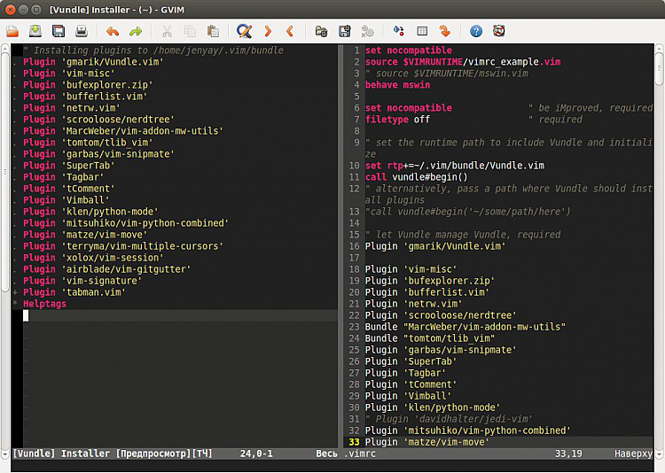
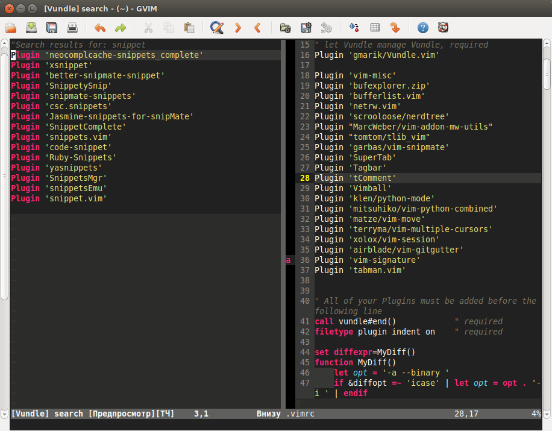

Плагин Vundle. Автоматическая установка и обновление плагинов
В прошлой статье я писал про такой замечательный плагин как Pathogen, который позволяет упорядочивать плагины, храня каждый плагин в отдельной папке без необходимости разбрасывать файлы плагина по многим папкам вроде plugin, doc, syntax и т.п.
Но сейчас существует еще более мощный плагин, который позволяет не только хранить все плагины в одной папке, но также может устанавливать нужные плагины по их названию, автоматически их скачивая, а также автоматически их обновлять или удалять. Этот плагин называется Vundle.
Для его установки нужно сделать несколько магических телодвижений с файлом .vimrc и папкой .vim (в дальнейшем тесте статьи я не буду упоминать о том, что под Windows файл .vimrc называется _vimrc). Алгоритм установки выглядит следующим образом.
0. Vundle для скачивания и обновления использует git и curl. Под Linux эти программы, как правило, уже установлены или устанавливаются без проблем. Git под Windows тоже устанавливается легко, а вот curl нужно еще поискать. Проще всего его скачать с сайта по адресу http://www.confusedbycode.com/curl/. После установки убедитесь, что в командной строке стала доступна команда curl. Это можно сделать, выполнив в консоли следующую команду:
curl --version
В результате вы должны увидеть что-то наподобие следующих строк:
curl 7.30.0 (i386-pc-win32) libcurl/7.30.0 OpenSSL/0.9.8x zlib/1.2.7
Protocols: dict file ftp ftps gopher http https imap imaps ldap ldaps pop3 pop3s rtsp smtp smtps telnet tftp
Features: AsynchDNS GSS-Negotiate IPv6 Largefile NTLM SPNEGO SSL SSPI libz
Если Windows не ругается, что команда curl не найдена, значит все нормально и можно двигаться дальше.
1. В папке .vim нужно создать папку bundle, куда будут устанавливаться все плагины. В принципе, эту папку можно называть как угодно, главное потом в будущих настройках ее правильно указать, но обычно ее называют именно так, и я не вижу особого смысле не следовать традиции.
2. Затем в эту папку нужно склонировать репозиторий плагина с github:
git clone https://github.com/gmarik/Vundle.vim.git ~/.vim/bundle/Vundle.vim
Обратите внимание, что здесь также упоминается папка bundle, если вы ее назвали как-то по-другому, ее следует переименовать и здесь.
Если вы используете Vim под Windows, то вместо имени папки .vim нужно писать vimfiles:
git clone https://github.com/gmarik/Vundle.vim.git ~/vimfiles/bundle/Vundle.vim
А лучше для надежности перейти в папку bundle с помощью команды cd и склонировать репозиторий плагина непосредственно в эту папку (точнее, во вложенную папку Vundle.vim)
3. Теперь открываем файл .vimrc и в начало файла добавляем следующие строки (для Linux):
Под Windows эти строки должны выглядеть следующим образом:
По поводу первых двух и последней строк не стоит даже задумываться - они нужны из-за особенностей работы Vundle.
Четвертая строка добавляет новый путь до так называемого Пути runtime (runtimepath - rtp). Эта переменная хранит список путей, по которым ищутся плагины различных типов. По умолчанию этот параметр хранит путь только до папки .vim. Четвертая строка добавляет в список еще один путь, по которому Vim должен искать различные файлы плагинов, в данном случае - это папка плагина Vundle (в ту папку, куда мы его склонировали из репозитория. Обратите внимание, что здесь опять упоминается имя bundle). Таким образом, внутри папки ~/.vim/bundle/Vundle.vim могут быть (и они там действительно есть) такие папки как plugin, doc и т.п.
Углубляясь в то, как работает плагин Vundle надо сказать, что при установке плагинов с помощью него, Vundle будет добавлять в переменную rtp (или полное название runtimepath) аналогичные пути до всех установленных плагинов, благодаря чему нет необходимости файлы каждого плагина раскидывать по множеству папок. В случае, если вам плагин больше не нужен, достаточно удалить его папку, и не надо искать, в каких других папках остались его файлы.
Чтобы увидеть, что хранится у вас в переменной rtp, достаточно выполнить команду:
:echo &rtp
или
:echo &runtimepath
Это будет особенно полезно сделать после установки каких-нибудь плагинов.
4. Добавляем интересующие нас плагины. В приведенном выше тексте, добавленном в .vimrc, есть строки:
call vundle#begin()
...
call vundle#end()
Между ними как раз и надо перечислить плагины, которые нужно установить. В тех строках, что мы уже добавили в vimrc, добавлена ссылка на сам плагин Vundle. Плагины добавляются с помощью команды Plugin. Осталось разобраться, откуда они будут скачиваться.
В стародавние времена плагины брали на сайте http://www.vim.org/, но плагин Vundle вместо него использует другие источники - это https://github.com и http://vim-scripts.org/. Последний сайт позволяет скачивать плагины через git (все через тот же github).
Чтобы добавить плагин для установки, нужно добавить команды Plugin с параметрами между вызовами call vundle#begin() и call vundle#end(). Параметры команды Plugin зависят от источника. Например:
call vundle#begin()
Plugin 'gmarik/Vundle.vim'
' Плагин ищется на сайте vim-scripts.org
Plugin 'vim-signature'
' Ссылка на репозиторий github
Plugin 'scrooloose/nerdtree'
call vundle#end()
Если плагин упоминается на сайте http://vim-scripts.org/, а полный список этих плагинов можно посмотреть по ссылке http://vim-scripts.org/vim/scripts.html, то достаточно указать его имя. Если у плагина есть свой репозиторий на github, то нужно указать окончание ссылки на репозиторий, где содержится имя пользователя, который владеет репозиторием и собственно имя репозитория.
Плагин Vundle поддерживает и другие ссылки на плагины, например, через git, репозиторий который находится не на github, ссылки на локальный репозиторий и некоторые дополнительные настройки. Но мы их здесь рассматривать не будем, эти параметры можно посмореть в документации, вызвав команду
:h vundle
или на странице плагина.
5. Устанавливаем и обновляем плагины.
После того, как были добавлены ссылки на новые плагины в файле .vimrc, необходимо перезапустить Vim или заново прочитать .vimrc с помощью команды
:so $MYVIMRC
После этого выполнить команду:
:PluginInstall
Vundle пройдется по списку перечисленных плагинов и скачает новые плагины, которые до этого не были установлены. При этом установленные плагины на обновления не проверяются.
В результате откроется еще один буфер со списком плагинов. Вот, например, как выглядит этот буфер у меня после того как я добавил плагин tabman.vim (не важно, что это за плагин). Около установленных ранее плагинов (про некоторые из них мы еще поговорим) слева стоят точки, а новый плагин отмечен плюсиком.
|
 |
Если вы хотите проверить установленные плагины на наличие новых версий, достаточно выполнить команду
:PluginUpdate
В результате откроется буфер наподобие того, что показан на рисунке выше, только обновленные плагины будут отмечены звездочками.
Кроме того, с помощью команды :PluginSearch можно искать нужный плагин по ключевому слову.
:PluginSearch ключевое_слово
На следующем скриншоте показан результат выполнения команды :PluginSearch snippet:

Найденные плагины можно устанавливать непосредственно из открывшегося буфера с помощью клавиши i. Выбранный плагин будет установлен. Правда, этот плагин не будет добавлен в файл .vimrc и, соответственно, в будущем Vundle не будет проверять его обновления, но в .vimrc упоминание этого плагина можно внести и позже.
Если вы хотите удалить плагин, то удалите или закомментируйте с помощью двойной кавычки его упоминание в .vimrc и вызовите команду
:PluginClean
Перед удалением каждого плагина Vundle будет спрашивать, действительно ли вы хотите удалить плагин. Если вы заранее согласны на все удаления и не хотите, чтобы вам задавали эти вопросы, то к предыдущей команде добавьте знак "!":
:PluginClean!
В результате Vundle удалит все плагины из папки bundle, которые не упоминаются в вашем файле .vimrc.
В качестве альтернативы данного плагина есть еще NeoBundle - плагин, основанный на Vundle.